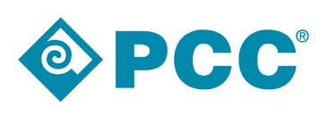

Not only do we offer high-quality, career-focused study programmes that prepare you well for the working world, but you can be assured that they are up to the highest educational standards.
Not only do we offer high-quality, career-focused study programmes that prepare you well for the working world, but you can be assured that they are up to the highest educational standards. At IU you get a high-quality degree from Germany’s largest university. But what makes us even prouder, is that 96% of our students think so too. Our practice-oriented study programs prepare you for your future career. This is why 94% of IU graduates find a job within 3 months after graduation.
Please contact us per Email for any further questions about
the Get to know about PCC 2024!
mohammedjamal999999@gmail.com
At IU, it has always been our mission to help as many people as possible to take control of their career and future.
At IU, it has always been our mission to help as many people as possible to take control of their career and future. Would you like to get an overview of our study programmes? Would you like to find out more about IU International University of Applied Sciences and about studying online or on campus with us? Simply register for one of our information events.
Take a look at the two past events "PCC 5, PCC 6" which took place in Alexandria Egypt.
PCC 6, Konouz Agamy
Bibleotheca Alexandria, Shatbi